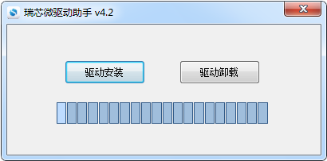
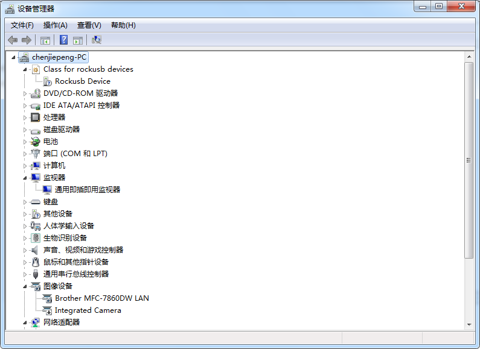

Qop核心板使用手册¶
开发前准备工作¶
编译环境配置(ubuntu 16.04)
sudo apt-get install git gcc-arm-linux-gnueabihf u-boot-tools device-tree-compiler mtools
sudo apt-get install parted libudev-dev libusb-1.0-0-dev python-linaro-image-tools
sudo apt-get install linaro-image-tools libssl-dev autotools-dev libsigsegv2 m4 libdrm-dev
sudo apt-get install curl sed make binutils build-essential gcc g++ bash
sudo apt-get install patch gzip bzip2 perl tar cpio python unzip rsync
sudo apt-get install file bc wget libncurses5 libglib2.0-dev openssh-client lib32stdc++6
安装ARM交叉编译工具链和编译内核相关软件包
sudo apt-get install gcc-arm-linux-gnueabihf libssl1.0.0 libssl-dev
sudo apt-get install gcc-aarch64-linux-gnu device-tree-compiler lzop libncurses5-dev
固件烧写¶
安装 RK USB 驱动¶
下载 Release_DriverAssistant.zip ,解压,然后运行里面的 DriverInstall.exe
.为了所有设备都使用更新的驱动,请先选择"驱动卸载",然后再选择"驱动安装".

驱动安装¶
进入下载模式¶
设备先断开电源适配器和Type-C数据线的连接
USB数据线一端连接主机,Type-C一端连接开发板Type-C母口.
按住设备上的 RECOVERY （恢复）键并保持.
接上电源
大约两秒钟后,松开 RECOVERY 键.

进入下载模式¶